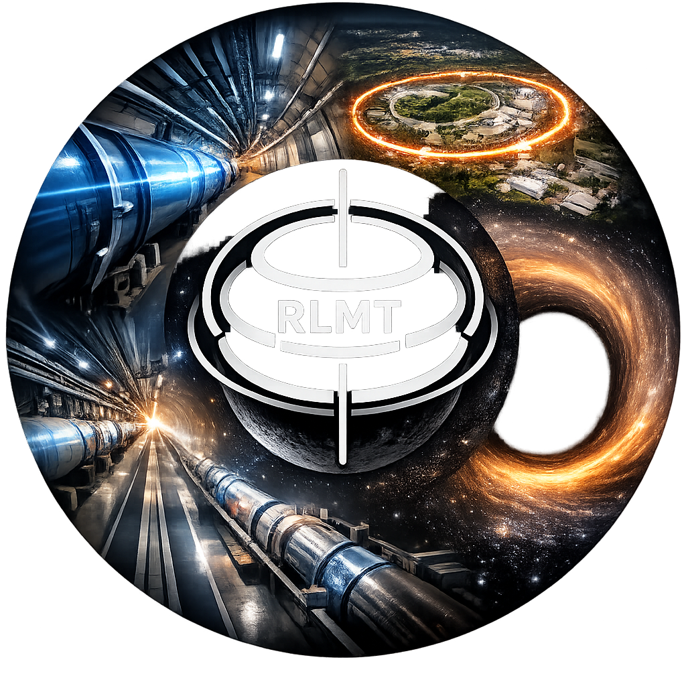

R-layer Mode Theory Researcher
Name: Tohi Tsuyoshi
Address: Japan
E-mail: To be announced
Favorite Subjects:
R-layer Mode Theory, AI, Audio Engineering, etc.
Personal Motto:
The universe is built from a single, extremely simple equation.
Current physics identifies about 15 elementary particles, including quarks and leptons. However, the idea that “the smallest building blocks of nature” come in 15 types feels unnecessarily complicated.
What if quarks themselves are not fundamental? What if all quarks are composed of only two even smaller modes, combined in different configurations?
If such a structure exists, then gravity, dark matter, and dark energy could be explained in a far simpler and more unified way.
My research, R-layer Mode Theory, explores this possibility.
氏名： 戸井 剛（Tohi Tsuyoshi）
所在地： 日本（詳細非公開）
メール： 後日公開予定
好きな分野：
R-layer モード理論、AI、オーディオ工学 ほか
モットー：
宇宙はすごく単純な一つの方程式からできている。
現在の物理学では、クォークやレプトンなど約15種類の素粒子が確認されています。 しかし「最小単位なのに15種類」という事実は、むしろ“複雑すぎる”と感じています。
もし、クォークそのものが最小ではなく、 たった2種類のより小さなモード の組み合わせで構成されているとしたらどうでしょう。
そのような構造が存在するなら、重力、ダークマター、ダークエネルギーといった 現代物理学の最大の謎も、より単純で統一的に説明できるはずです。
私の研究である R-layer Mode Theory は、 宇宙が層状の張力場と離散的なモードから構成されているという視点から、 自然界の複雑さの奥にある“単純な構造”を明らかにしようとする試みです。